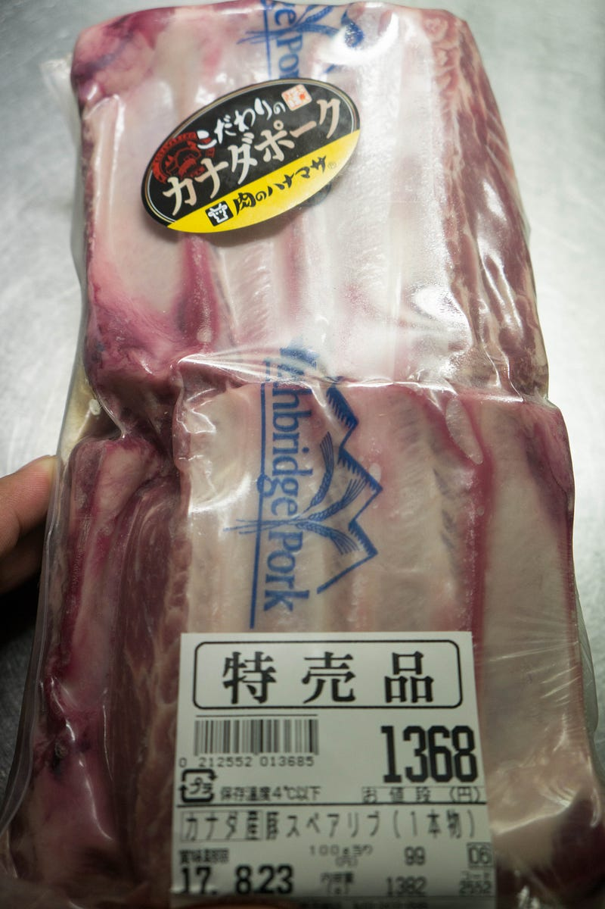
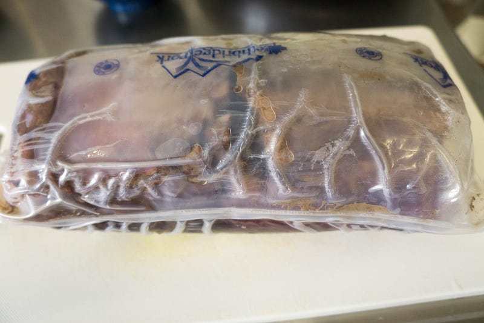
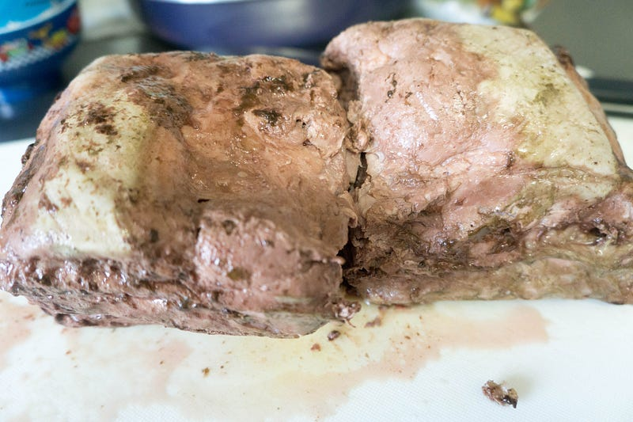
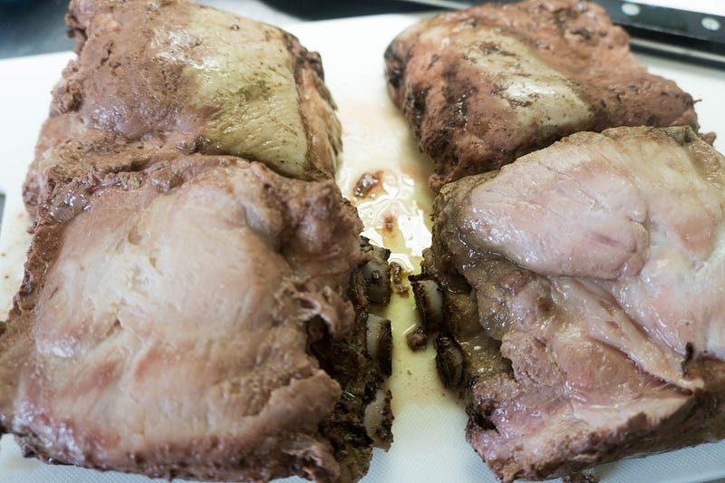
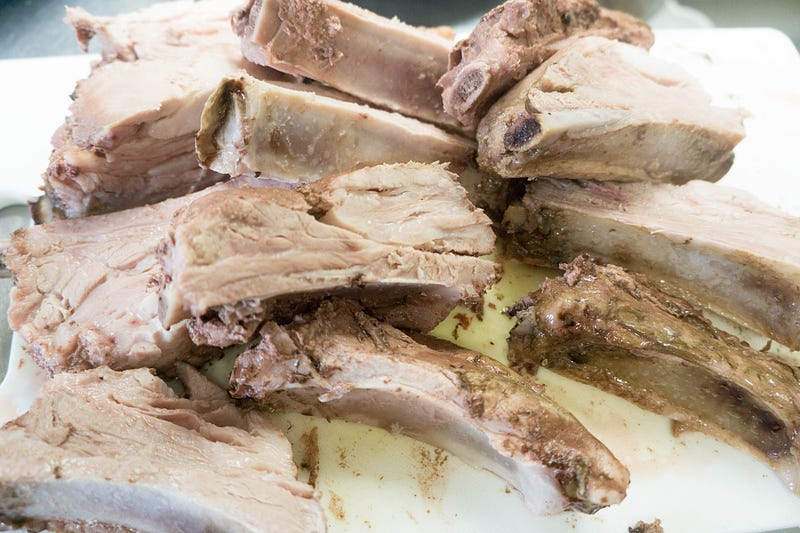
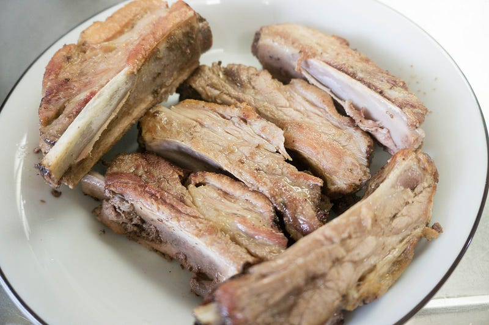
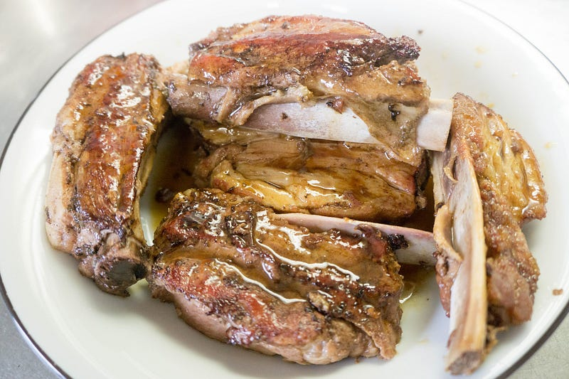
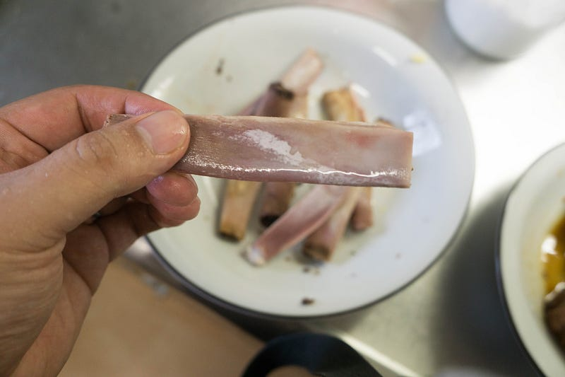

Anovaで豚スペアリブを徹底的にやる
Anovaで豚スペアリブを徹底的にやる
この間特売してたので、ハナマサで豚のスペアリブを買ってきた。今回も低温調理でやる。
New: Anova Precision Cooker - WIFI 2nd Gen (900 Watts)が卓上IHクッキングヒーターストアでいつでもお買い得。当日お急ぎ便対象商品は、当日お届け可能です。アマゾン配送商品は、通常配送無…amzn.to
前回はこちら
骨の部分だし、ちゃんとやるかーと思って、いつもこの手のものを作る時に参考にしているSerious eatsを見てみたら63℃で36時間とか書いてあって愕然とした。1日半てあーた…
I was a skeptic at first, but I'm going to say it now: When done properly, ribs cooked via sous vide are every bit as…www.seriouseats.com
幸い夜にこの事実に気づいたので、急いで68℃20時間という中間的な設定で臨むことにした。それでも20時間だ。結構な時間。

20時間、途中水の様子をみながらとにかく待つだけ。ところで今回はすでに真空パックだったので、そのままお湯に突っ込んで調理してたんですが、みなさん知ってましたか、この手のお肉をこうやって調理すると真空パック内にすげぇ空気が溜まって、浮力を得ますよ。僕は皿を駆使してこの浮力のついた肉の塊をお湯の中に沈めてやりました。
なお、トングや菜箸で重めの皿をお湯の中で微調整するのは不可能に近いですし、70℃近いお湯の中に手を突っ込むのはそれなりに辛いので、こういうBBQ用のグローブがあると良いです。
高品質、防水なFDAシリコン サイズ：27.5*17.5*2.2cm 材質：シリコン 重さ：142g 使用範囲：電子レンジ、オーブン、冷蔵庫、食器洗い機などにも最適です。 品質検査：アメリカFDAテストを通過し、安全に食品を使えます。 …amzn.to
20時間経って引き上げるとパンパンになっております。

袋から取り出しても一瞬なんだかわかりませんね。

これ、実はスペアリブが左右2枚ずつ重なってる状態です。バラすと、こう

ここから食べやすいように骨に沿って切ってやります。包丁を入れた時点でもはやこれは肉ではないという感じの柔らかさを感じます。

なるほど。
折角量があるので、シンプルに塩だけで味付けしたものと、照り焼きにしたものと2種類作ります。照り焼きのほうが、元のレシピのアメリカンBBQに近い感じですな。

塩焼き。あっさり。これ、味を薄めにして、ショウガ醤油でいくとうまかった。

照り焼き。ちょっと手抜きだったので照りが足りないけど、味は良い感じ。
さすがに20時間もやると肉の線維が完全に崩れてる。水分もそれなりに抜けてるけど、ぱさつくという感じではない。むしろ、「アメリカのBBQスペアリブってこういう感じだよな」という感じの肉質だ。もっと強烈なソースをたっぷり塗ってやれば完全にアレになると思う。
そしてさっきも書いたけど、照り焼きのほうがそのアレに近いので、この肉の調理方法にはこちらのほうが合ってた。どっちもうまいけど。脂身の部分も完全にとろりと良い感じになっててうまい。
そしてやはり特筆すべきは、やはり焼いて仕上げてるのに、圧倒的な柔らかさと骨離れの良さだ。これ、BBQで出されたら「すげー！」って言う感じ。

20時間は迷うところだけど、anova2，3本使って5〜10人前を用意するとかだったらありだなー、とか思った。味はとにかくうまい。
残りは冷凍して、また後日食べる。あー、うまかった。